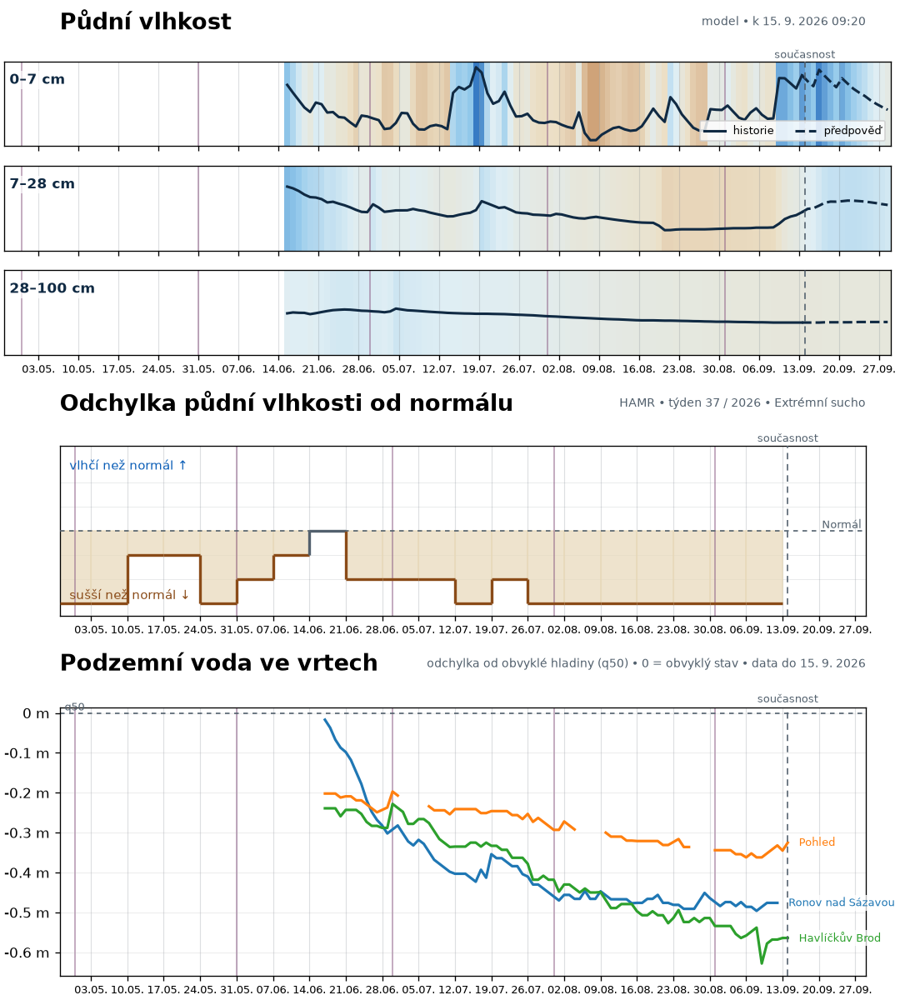

Detail Přibyslav – RainViewer
Detailní radarový pohled nad Přibyslaví a blízkým okolím. Bourky.cz zůstává přímým českým alternativním pohledem.

Půdní vlhkost, regionální stav vůči normálu a podzemní voda používají společnou přibližně dvacetitýdenní osu. Týdny jsou zarovnané na pondělí 0:00; začátky měsíců jsou zvýrazněné bez dalšího popisku.

Modelový odhad používá ECMWF IFS přes Open-Meteo a zůstává rozdělený do tří samostatných grafů 0–7, 7–28 a 28–100 cm. Plná čára je historický modelový odhad, přerušovaná část předpověď. Jednotkou je m³/m³. Nejde o lokální měření ani o procento rostlinám dostupné vody.
Schodový graf zobrazuje týdenní provider kategorii HAMR / ČHMÚ pro DVL_0190 vůči kategorii 4 = normální stav. Kategorie 1–3 jsou sušší, 5–7 vlhčí nebo nasycenější. Výška grafu je pouze pořadové vizuální umístění původních kategorií.
Regionální indikátor; nejde o měření ani odhad hladiny soukromé studny. Čáry jsou tři samostatné vrty ČHMÚ a zobrazují odchylku od vlastního sezonního mediánu q50. Řady se neslučují do jedné syntetické hladiny Přibyslavi.
Radar je až na konci stránky. Dva různé externí pohledy se vzájemně doplňují; při problému použij přímé odkazy.
Detailní radarový pohled nad Přibyslaví a blízkým okolím. Bourky.cz zůstává přímým českým alternativním pohledem.
Širší regionální pohled s radarovou vrstvou Windy.